<mat-toolbar class="navbar-color-dark">
    <a [routerLink]="isLoggedIn ? '/dashboard' : '/'" class="container">
        
    </a>
    
    <span *ngIf="!isLoggedIn" class="text-light hidden-mobile" style="margin-left: 10px;">NEORIS Practica</span>

    <a *ngIf="isLoggedIn" [routerLink]="'/dashboard'"
    class="text-light hidden-mobile" 
    style="margin-left: 10px; text-decoration: none;">Lista de usuarios</a>
    
    <span *ngIf="login.isAdmin()" class="text-light hidden-mobile" style="margin-left: 10px;"> | Admin</span>
    <span *ngIf="login.isNormal()" class="text-light hidden-mobile" style="margin-left: 10px;"> | Recepcionista</span>
    <span class="example-spacer"></span>


    <a *ngIf="isLoggedIn && user" [routerLink]="'/profile'"
    class="text-light hidden-mobile mr10 ml10 user" 
    style="margin-left: 10px; text-decoration: none; text-size-adjust: auto;">Hola, {{ user.username }}!</a>
    

    <a *ngIf="!isLoggedIn" [routerLink]="'/login'" class="mr10 ml10 btn btn-light">
        Iniciar sesión
    </a>

    <a *ngIf="login.isAdmin()" [routerLink]="'/signup'" class="mr10 ml10 btn btn-success">
        <mat-icon class="mr5">person_add</mat-icon> 
        <span>Añadir</span>
    </a>

    <a *ngIf="isLoggedIn" (click)="logout()" class="mr10 ml10 btn btn-light">
        <mat-icon class="mr5">logout</mat-icon> 
        <span>Cerrar sesión</span>
    </a>

</mat-toolbar>